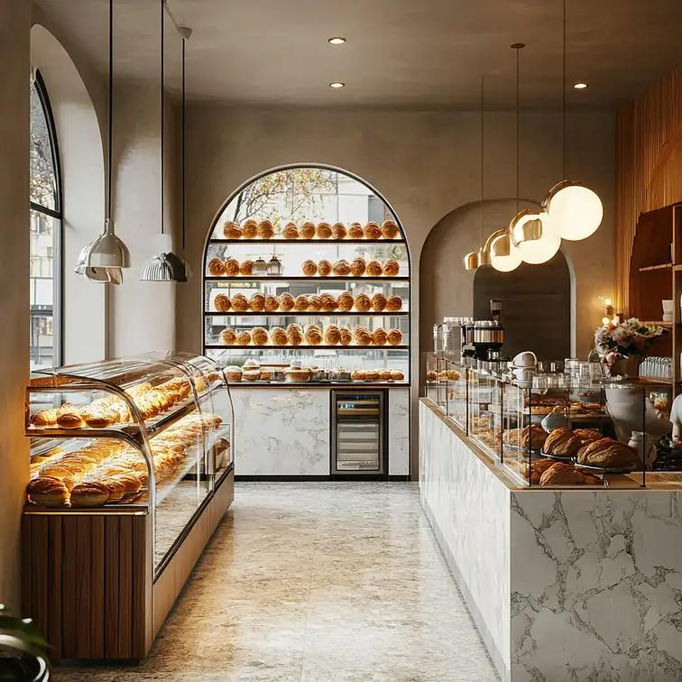
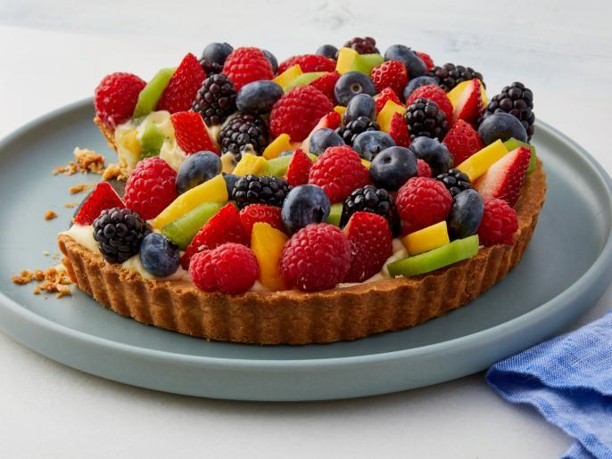

Patience over Shortcuts
At Gourmet Recipe & Culinary Studio, we believe that real pastry creation cannot be rushed. Great croissants require 3 days of cold fermentation; great sourdough requires natural wild yeast; great ganache requires precise thermal emulsification.
We created this culinary portal to demystify complex French pastry formulations and provide home bakers with restaurant-grade formula ratios.
Designed for Precision & Flow
Our studio features marble rolling counters, humidity-controlled proofing chambers, and stone deck ovens. Every workstation is built to give bakers ideal thermal stability while handling sensitive laminated doughs.
Whether testing dark chocolate mousses or perfecting gluten structures, our kitchen is a sanctuary for culinary focus.

Ingredients We Trust
We strictly work with unadulterated raw ingredients sourced directly from traditional producers.
AOP Normandy Butter
84% butterfat cultured butter providing unmatched plasticity and rich hazelnut notes in viennoiserie.
Grand Cru Chocolate
Single-origin cacao beans from Ecuador and Madagascar with nuanced acid and fruity profiles.
Organic Stone-Ground Flour
Unbleached French T55 and T65 flours retaining natural germ, minerals, and wheat aroma.
The Commitment to Excellence
Every recipe published on our platform has undergone at least 15 iterations in our test studio. We measure humidity levels, oven thermal retention, and ingredient pH so you get foolproof results in your home oven.
Explore Recipe Archive100% Metric Precision Formulas
Thermal & Humidity Calibrated
No Artificial Flavors or Preservatives
What Drives Our Studio
Generosity
Sharing secret chef techniques openly to foster a thriving global community of passionate bakers.
Rigor
Treating pastry as an exact science where precision produces extraordinary edible art.
Heritage
Honoring centuries-old baking traditions while embracing modern culinary creativity.